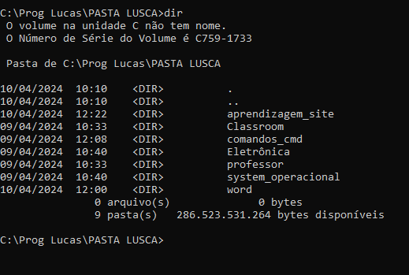
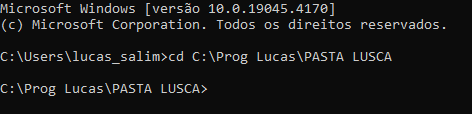

Sistema operacional
Exemplos de sistemas operacionais
O que é Interfae CLI e GUI
Comandos GitBash
Comandos no CMD
sistema de versionamento
Repositório
Deploy
Comandos do sistema operacional
DIR
dir - listar arquivos e pastas

CD
CD - (change dir) muda a pasta de direcionamento
